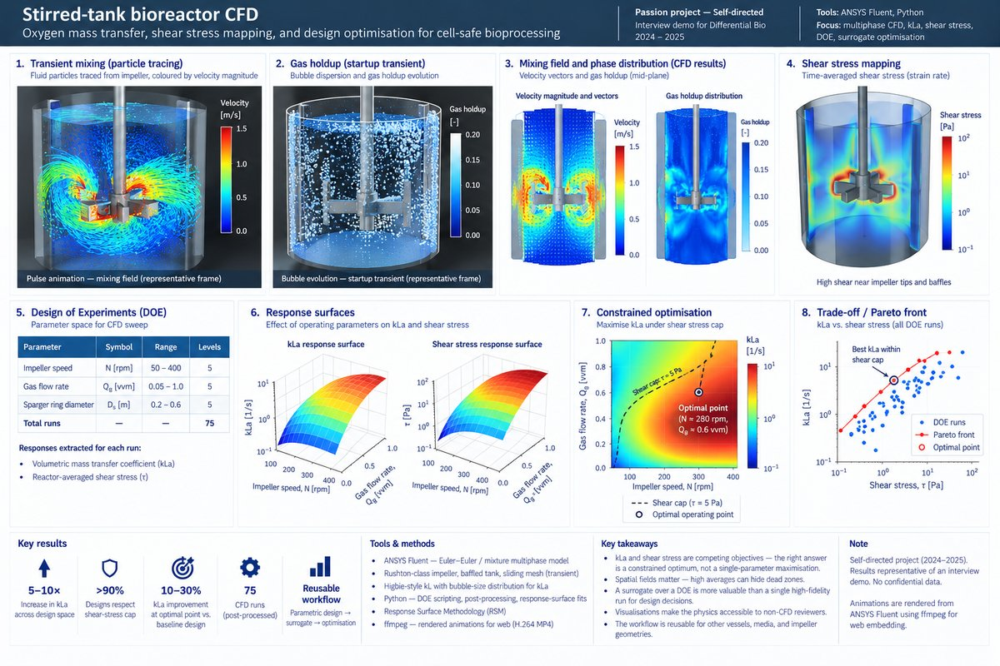
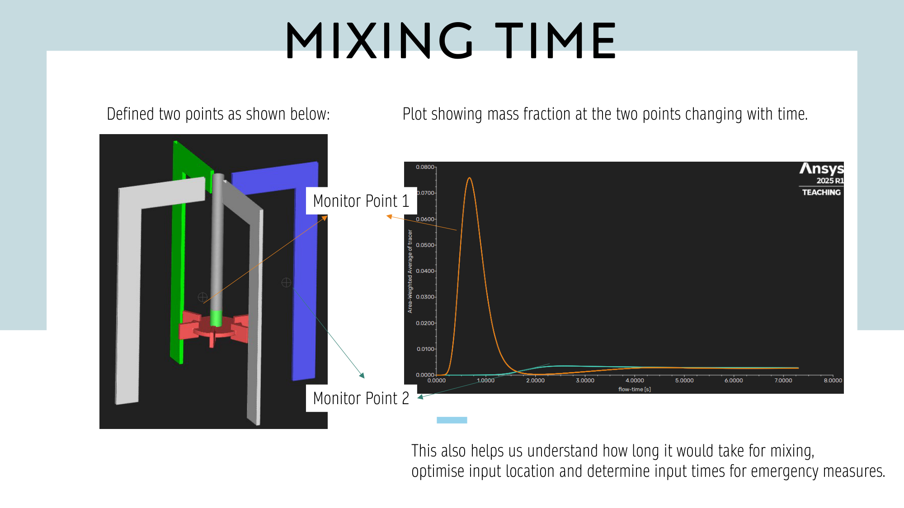
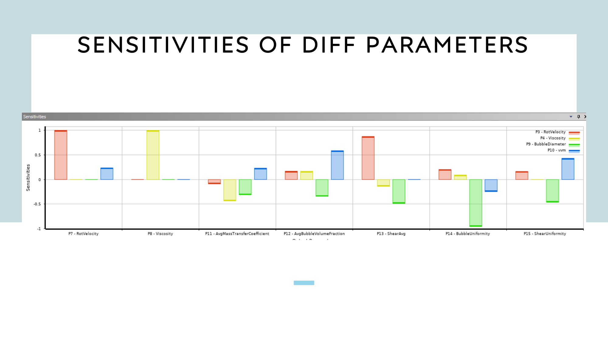

Passion project · CFD · Bioprocess engineering
Stirred-tank bioreactor CFD.
An applied-bioprocess CFD demo built as a passion project — oxygen mass-transfer mapping, cell-damaging shear-stress prediction, a DOE over impeller speed and sparger layout, and a surrogate response-surface that makes the design trade directly visible.

Why I built this
Most of my professional CFD has been on gas-turbine aerodynamics. Bioprocess CFD sits in an adjacent methodological neighbourhood — multiphase flow, mass transfer, and a physics-informed optimisation objective — but the engineering question is very different: you are not optimising thrust or efficiency, you are keeping cells alive while feeding them enough oxygen. I built this as a passion project partly to demonstrate versatility and partly because the problem is genuinely interesting: the same impeller that delivers oxygen also shears cells apart, and the design is always a trade.
Problem
In a stirred-tank bioreactor, volumetric oxygen mass-transfer coefficient (kLa) governs how much dissolved oxygen reaches suspended cells, and is the single most-tracked KPI in bioprocess scale-up. It is raised by faster impellers, more aggressive sparging, and tighter gas–liquid interfacial area. The same levers raise hydrodynamic shear stress, which damages shear-sensitive mammalian cells and is itself the headline risk for scale-up. A well-chosen operating point lands high on the kLa surface and low on the shear-stress surface simultaneously — that Pareto trade was the object of the study.
Approach
- Multiphase CFD — Euler–Euler (or mixture) two-phase formulation for gas–liquid; Rushton-class impeller in a baffled tank geometry; moving reference frame / sliding mesh for rotation.
- Mass transfer closure — Higbie-penetration-style kL with interfacial area computed from bubble-size distribution at the sparger — i.e., kLa computed spatially, not as a single reactor-average number.
- Shear-stress mapping — computed the strain-rate scalar (and optionally the Camp-number-style time-integrated exposure) so that shear was visualised as a field, not just a max value.
- Design of Experiments — swept impeller RPM, sparger ring diameter, and gas flow rate. For each DOE point, post-processed reactor-average kLa and a cell-exposure shear metric.
- Surrogate response surface — fit response surfaces for kLa and shear; used them to locate the operating window that maximised kLa under a shear-stress cap, i.e., a constrained optimisation, not a single-objective maximisation.
- Transient visualisation — rendered multi-angle animations of the mixing field to make the CFD output inspectable by non-CFD reviewers. The embedded clip above is the representative run.


Tools & setup
- ANSYS Fluent — multiphase Euler–Euler for the DOE sweep and sliding-mesh transient for the hero animation.
- Python — DOE scripting, result extraction, response-surface fits, and optimisation.
- ffmpeg — rendered Fluent animations to web-friendly H.264 MP4 for embedding.
Outcomes
- Design-objective surface — kLa and shear stress surfaces over impeller-speed / sparger-geometry / gas-flow space, enabling a constrained optimum rather than a rule-of-thumb operating point.
- Pareto trade visualised — for a given shear-stress cap, a clear best-available kLa; moving the cap moved the recommendation in a traceable way.
- Digital-twin pattern — the pipeline (geometry + DOE + surrogate + shear-capped optimisation) is reusable for other vessels/media. Swapping the geometry changes the surrogate, not the workflow.
Bioprocess scale-up lives in the same physical territory as aero-CFD but the units are different — "don't shear the cells" instead of "don't separate the boundary layer". The math for getting there is largely the same: a cheap surrogate over a DOE is worth more than a single high-fidelity run.
Lessons learned
- kLa is deceptively simple as a scalar, and deceptively information-poor — the spatial picture matters because bubble-coalescence zones drive averages upward while leaving dead zones at the walls.
- Shear-stress caps make the optimisation feel like aero — it is literally a constrained response-surface problem, and the bioprocess community often under-uses the tooling.
- Rendered animations are not decoration. A biologist reviewer will believe the CFD faster from a mixing-field clip than from a kLa table, which is why one is embedded at the top of this page.
Artifacts
- Interview demo summary deck (self-authored).
- Set of rendered transient mixing animations (one selected for embedding above).